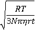
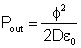
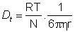
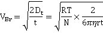
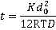
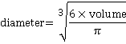
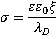
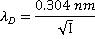

Nanobubbles,
from [2108, ]not to exact scale
Nanobubbles (ultrafine bubbles) are sub-micron gas-containing cavities in an aqueous solution.
 Confined water
Confined water
 Interfacial water and water-gas interfaces
Interfacial water and water-gas interfaces
 Self-generation of colligative properties in water
Self-generation of colligative properties in water
 Bubbles
Bubbles
 Surface nanobubbles
Surface nanobubbles
 Bulk nanobubbles
Bulk nanobubbles
 A rationale for nanobubble stability
A rationale for nanobubble stability
 Nanobubble detection and characterization
Nanobubble detection and characterization
 Nanobubble preparation and use
Nanobubble preparation and use
 Brownian motion
Brownian motion
 Osmotic pressure stabilizes nanobubbles
Osmotic pressure stabilizes nanobubbles
''...bubbles were able to sit stably on the surface'
Ishida, Inoue, Miyahara & Higashitani, 2000 [2954]
Bubbles [2937] are gas-filled cavities within liquids (and solids; here, we deal with liquids only). They act as a gas reserve in addition to the dissolved gas. In liquids, bubbles have internal equilibrium pressures at least that of the external environment. In water, such bubbles contain saturated water vapor with 100% relative humidity. Each bubble is surrounded by an interface that possesses different properties to that of the bulk solution. Surfactants can stabilize bubbles of all sizes [2942], but bubbles may also be formed without them. Large bubbles (>100 µ diameter) rise rapidly (> 6 mm ˣ s−1) and directly to the surface. As the bubble's surface area per contained volume increases in proportion to its diameter, microbubbles ( 1 µ - 100 µ diameter) [3204] provide a higher surface area per unit volume than the commonly seen larger bubbles. They may be produced by numerous methods and have been used for sludge solubilization, water purification, treatment of wastewater, drug delivery, and as contrast agent together with ultrasound. l They are not stable for extended periods (~ minutes), rising slowly (10−3 - 10 mm ˣ s−1) and indirectly to the surface, but smaller ones (≈ < 20 µ diameter) will shrink to form more effective and stable nanobubbles. Only these tiny bubbles (< 1 µm diameter) j are stable for significant periods in suspension (rising at less than 10−2 µm ˣ s−1 but with this counteracted by Brownian motion of greater than 1 µm ˣ s−1), with larger or smaller bubbles disappearing rapidly from aqueous suspensions unless stabilized with surface-active agents. They are normally and commonly present in lower amounts in aqueous solutions. Their presence is necessary as cavitation nuclei in pure water, particularly when it does not contain any foreign microparticles and the vessel is without any wall defects [2822].
Nanobubbles (for a history, see [2745]) are generally recognized in the current (2018 and earlier) scientific literature as those gaseous cavities with diameters less than a micron. As such cavities (bubbles) are often greater than 100 nm in diameter, but the term 'nano' is applied mostly to particles of smaller diameter (< 100 nm, ISO 20480-1:2017), sub-micron bubbles should probably be known as ultrafine bubbles in the future; all bubbles smaller than 100 µm diameter should then be known as 'fine' bubbles. In this website, we use the term 'nanobubble' as it is still more widely used in the literature.
The surface area of a volume of bubbles is in inverse proportion to the bubble diameter. Thus for the same volume of bubble, their surface area (A) increases proportionally to the reduction in bubble diameter (D; A = 6/D); for example, one mL of 100 nm radius bubbles (2ˣ1015 bubbles) has 1000 times more surface (60 m2) than one mL of 0.1 mm bubbles (2ˣ106 bubbles, 0.06 m2).
Basic theory (see later) states that the energy cost of bubble formation depends upon the interfacial area and is governed by the bubble's surface tension. Small bubbles (< 25 µm diameter) have taut inflexible surfaces (like high-pressure balloons) that limit distortion since large bubbles (≈ mm diameter) have flexible surfaces (like low-pressure balloons) and can divide (break up) relatively quickly. The buoyancy of larger bubbles will cause them to rise to the surface of aqueous solutions.
Nanobubble movement
Stokes' equation is valid for particles at low Reynolds number and governs the rising rate (R = rise rate, m ˣ s−1): a
R = ρgd2/18μ
where ρ = density (kg ˣ m−3), g = gravity (m ˣ s−2), d = bubble diameter (m), and μ = dynamic viscosity (Pa ˣ s); according to this relationship, a 2.5 μm diameter bubble rises 100 times slower (≈ 0.2 mm ˣ min−1) than a 25 μm diameter bubble (≈ 2.3 cm ˣ min−1) [1966], and a nanobubble rises much more slowly than its random (Brownian) motion. The actual behavior of bubbles is more complex than this, however, with experiments rarely showing good agreement with the Stokes equation. The Brownian movement velocities are given by the equation
v = 
where R is the gas constant (J ˣ mol−1 ˣ K−1; kg ˣ m2 ˣ s−2 ˣ K−1 ˣ mol−1), T is the temperature (K), N is the Avogadro constant, η is the dynamic viscosity (Pa ˣ s; kg ˣ m−1 ˣ s−1), r is the averaged particle radius (m), and t is the measurement time (here taken as one second for comparison to the bubble rise velocities).
Bubbles less than 1 μm diameter rise so slowly that the rate is not determinable. This is due to their random Brownian motion and their low buoyancy. Accumulation of denser elements at the smaller bubbles' extensive surfaces may contribute significantly to the low buoyancy of such tiny bubbles. Larger bubbles (25-200 μm diameter) do not obey the above Stokes equation but the Hadamard and Rybczynski equation with terminal velocity 1.5 times the Stokes velocity [2385]:
RH-R = 3R/2 = ρgd2/12μ
This is due to interfacial oscillations as the surface area increases, and this surface becomes less taut. Bubbles larger than about 0.2 mm rise at rates proportional to their diameter (Rd=0.2-2 mm = 120 d, m ˣ s−1). Bubbles larger than about 2 mm diameter rise rapidly at almost the same rate irrespective of diameter (Rd>2mm = ≈ 0.25 m ˣ s−1) [2386]. Larger bubbles (≈ > 0.2 mm) undergo significant shape changes on rising through the solution due to the frictional resistance of the liquid. All these rise velocities are relevant to low concentrations of bubbles. Where the solution has high bubble concentrations, the bubbles may physically interfere with each other and rise more slowly.
Time-dependent shrinkage of micro-bubbles, from [2068]
In addition to and in competition to the effect of buoyancy, small bubbles (<25-50 µm diameter) shrink (see right [2068]), such that the overall behavior of micro-bubbles is complex. Light scattering under dark-field microscopy (DFM) has been used to show the collapsing micro-bubbles down to nanobubbles. Micro-bubbles carrying a different type of gas (xenon, air and sulfur hexafluoride) displayed different shrinkage, but the final nanobubbles are similar, showing Brownian motion independent of the gas [4014].
The degree of saturation next to a bubble depends on the gas pressure within the bubble. Smaller bubbles have higher internal pressure (see below) and release gas to dissolve under pressure into the surrounding under-saturated solution whereas larger bubbles grow by taking up gas from supersaturated solution; thus small bubbles shrink, and large bubbles grow (a process known as 'Ostwald ripening').
Evolution of bubbles
The rates of these processes depend on the circumstances. Also, as bubbles rise, the pressure on them drops due to the depth of the water, and they consequentially grow and rise faster.
The electrostatic interactions between nanobubbles in water are usually significant enough to prevent coalescence [1966] and slow any rise. The charges on the bubbles are determined from their horizontal velocity (v, m2 ˣ s−1 ˣ V−1) in a horizontal electric field, where
v = ζε/μ
where ζ = zeta potential (V), ε = permittivity of water (s2 ˣ C2 ˣ kg−1 ˣ m−3), and μ = dynamic viscosity (Pa ˣ s). The zeta potential is generally negative. Although mostly reported as independent of the bubble diameter, some analyses show that more negative zeta potential is generally consistent with smaller nanobubble hydrodynamic size. It depends strongly on the pH (see graph elsewhere) and the dissolved salt concentrations (increased ionic strength reduces zeta potential). A similar negative charge on all the bubbles discourages their coalescence. Also, their division is not favored unless there is considerable energy input, with smaller bubbles requiring greater energy (see below). Thus, small bubbles can grow or contract but rarely coalesce or divide.
Insoluble gases may form nanobubbles that are stable indefinitely in water [2638]. For soluble gases, the pressure inside gas cavities is inversely proportional to their diameter, and given by the Laplace equation,
Pin = Pout + 4γ/d
Pexcess = 4γ/d
where Pin and Pout are the respective cavity internal and external pressures, γ is the surface tension (N ˣ m−1), and d is the cavity diameter (m). The external pressure is governed by the atmospheric pressure and the depth of the bubble. Thus 10 µm and 100 µm bubbles contain gas at about 1.3 and 1.03 bar respectively in water. Where the external pressure is negative,, and surfactant is present, such as within long-distance water transport in the xylem of plants (see negative pressure), stable water-vapor-containing nanobubbles are formed [3258].
This Laplace equation is simply derived by equating the free energy change on increasing the surface area of a spherical cavity
= γΔA = 4πγ(r+δr)2 - 4πγr2
to the pressure-volume work
= ΔPΔV = ΔP(4/3)π(r+δr)3 - ΔP(4/3)πr3
For nanobubbles the calculated internal gas pressure should cause their almost instantaneous dissolution using early theory [2639], i but as nanobubbles are now known to exist for long periods, this basic theory must be insufficient. It is not certain that the Laplace equation holds at very small radii [1129, 1807], but it does hold for H2 nanobubbles above 10-nm radius [3272]. It has been shown that surface tension may increase almost 20-fold to 1.3 N ˣ m−1 for 150 nm diameter droplets [823] in the absence of other effectors such as surface charge. Thus, the Laplace equation appears correct down to about a nanometer or so, below which a small correction must be applied [1271]. However, there may well be further contributions to the work required, due to the removal of surface-bound material, as the surface area contracts, that would lower the excess pressure. In the absence of any other surface effects such as solute interactions or charges, the excess pressures expected in a 50 nm radius spherical nanobubble and a 50 nm diameter surface nanobubble (rS = 50 nm, r = 1000 nm), due to the surface tension minimizing the cavity surface, are 5.8 MPa and 0.14 MPa respectively. It has been proposed that supersaturation around the nanobubbles may significantly lower the surface tension, allowing stable nanobubbles [2013].
The pressure within nanobubbles is affected by other factors and is possibly much lower than expected from the Laplace equation. The gas-liquid interface of bubbles may be deliberately (or fortuitously) coated with surface-active materials, such as protein or detergent, that lower the surface tension and hence the excess pressure stabilizies the bubbles. The presence and concentration of surface-active agents regulate the the size of the bubbles. Such coated microbubbles/nanobubbles are ‘armoured’ [4319].with a substantial coating of poorly soluble material and used as ultrasound contrast agents [2483] or for targeted drug delivery [2383].
An increase in static pressure on bulk nanobubbles caused their number concentration to decrease but their mean size to increase [3179],. Both these parameters undergo partial recoveries on the release of the pressure.
[Back to Top  ]
]
Surface nanobubbles [3715] are present at most aqueous surfaces with many more investigations made into surface nanobubbles than bulk nanobubbles (see below). These nanobubbles may be found in crevices (trapped nanobubbles) or on flat surfaces (surface nanobubbles) [3700]. Stability theories for nanobubbles at solid-liquid interfaces have been reviewed [3259].
Nanobubble dimensions
Surface nanobubbles may be formed by the solvent exchange procedure whereby a hydrophobic surface is first contacted with water which is then replaced by ethanol or a similar solvent. At this stage. No nanobubbles can be observed at this stage, but after the ethanol is replaced by water, surface nanobubbles are found [3013]. They vary considerably in dimensions but typically they might have dimensions of r = 50 nm - 6 µm, rS = 25 - 1000 nm, h = 5 - 20 nm (see right). They have greater contact angles (θ = 135° - 175°) than expected from macroscopic bubble studies on the same hydrophobic surface. The excess internal pressure is not great when the bubble radius is greater than about a micron.
Surface nanobubbles explain the increased liquid slip at liquid-solid interfaces and the resulting lower drag [1988]. Extended flat surface nanobubbles are known as micro- or nano-pancakes (1-2 nm in height). Surface nanobubbles and nano-pancakes are partially stabilized by processes that are not available to the bulk nanobubbles. For example, it is proposed that the three-phase line is fixed (called 'pinning' [2747] with a force of about 0.1 μN ) [2933]. This has been ascribed to surface roughness exacerbated by a surface charge-induced electrical double layer [2748]. Here the Laplace pressure inside the nanobubbles decreases during dissolution and increases during growth so extending their lifetime. This pressure behavior is the opposite of that expected for freely floating bulk nanobubbles. Also, the hydrophobic wall repels water, raises the solubility of gas molecules, and increasies the surface radius (rS). Other mechanisms for the stability of surface nanobubbles without contact line pinning have been proposed [3610]. It is also likely to be partially due to possession of a negatively charged surface similar to that described for free-floating nanobubbles.
The lifetime of surface nanobubbles is so long that they are considered stable [2108], and can withstand near-boiling temperatures [2187]. Surface nanobubbles (diameter 200 - 600 nm) may be formed by microwaving solutions containing dissolved oxygen [2664], probably due to localized surface heating. Nanobubbles also exist in undersaturated liquids, having concave vapor-liquid interfaces with negative curvature and hiding within surface defects [2663]. Neighboring surface nanobubbles may stabilize each other (or, in some cases, destabilize each other) by gas exchange through connecting gas "tunnels" along the solid surface [3806].
Nanobubbles are commonly found on solid hydrophobic surfaces in solutions open to the air, where they seem quite stable [1272] and may spread out to form pancake-like structures. Bulk nanobubbles are likely to be repelled from each other and from negatively charged hydrophilic surfaces at a distance. However, they may attach to such surfaces through water-separated films, if they closely approach [1273]. Surface and bulk-phase nanobubbles can both give rise to the otherwise difficult to explain long-range attraction between hydrophobic surfaces. As the temperature of aqueous solutions rises, the solubility of nonpolar gases drops, so increasing the gas released and nanobubble volume and surface coverage [842] but generally having a much lesser effect on nanobubble concentration.
[Back to Top  ]
]
Bulk nanobubbles [1632, 1989, 2013, 2108, 2307, 2959, 3439, 3793] are long-lived (» s) gas-containing cavities [2633] in aqueous solution. g They are stable for weeks in distilled water and open solution [3536]. The very existence of bulk nanobubbles is still (mistakenly but vehemently) disputed by some surface nanobubble researchers. One group found that stable bulk nanobubbles require trace organic contaminants to form under their conditions [3540] but other groups have found that nanobubbles form in pure water [3902, 3903]. Also, in some cases nanoparticles may be produced rather than nanobubbles [3546, 3709]. However, it is now generally believed that bulk nanobubbles are present in most aqueous solutions, possibly being continually created by agitation and cosmic radiation [2108, 2109]. Their presence is significant to the properties of many aqueous solutions. Their concentration increases on stirring and reduces on filtration or degassing [2544]. Their size depends on the external pressure and their mass is very low, they can be distinguished from solid or liquid particles. Their formation and presence in microfluidics is a problem to be avoided [3652].
Stable bulk nanobubbles (diameter 40-300 nm) were first reported by the leading journal Nature, [2468] in 1982. They were found in the white cap of breaking waves by sonar observation. Although these bubbles are smaller than the wavelength of light and too small to be visible to the naked eye or standard microscope (given transparent solutions), they are visualized by backscattering of the light from a powerful green laser pointer (see below). Generally, as with larger bubbles, nanobubbles have negative zeta potential (≈ -25 to -40 mV) in neutral solutions, as proven by electrophoretic light scattering. These nanobubbles may have far-reaching physical, chemical, and biological effects. They are under excess pressure as the surface tension causes a tendency to minimize their surface area and hence volume. Although often ignored, they are in constant flux, with many gas molecules continuously leaving and entering the bubbles.
Nanobubbles have raised cavity pressure and grow or shrink by diffusion according to whether the surrounding solution is over-saturated or under-saturated. Gas solubility is proportional to the gas pressure. This pressure, exerted by the surface tension in inverse proportion to the diameter of the bubbles, increases significantly at small bubble diameters. This dissolution process is, therefore, accelerated with an increasing tendency for gases to dissolve as the bubbles reduce in size. Such dissolution increases with the bubble's movement and contraction during this process, which aids the removal of any gas-saturated solution around the cavities. Early theoretical calculations showed that nanobubbles should only persist for a few microseconds [1268]. However, the ease with which water forms larger visible bubbles, under slight tensile pressure well below the tensile strength of water, and the greater difficulty that occurs on degassing both indicate the occurrence of gas-containing nanobubbles (cavities). Clusters of nanobubbles (bubstons) are proposed that are stabilized by ionic solutes (and magnetic fields [2496]) and containing gas at atmospheric pressure [1826].
A high density of nanobubbles has been created in solution, and the heterogeneous mixture lasts for more than two weeks [1618]. The total volume of gases in these nanobubble solutions reached about 1% v/v under pressure in 1.9 ˣ 1016 50-nm radius nanobubbles (equivalent to about 600 cm3 when converted to standard temperature and pressure) per liter of water. These bubbles reduced the liquid density to about 0.988 g ˣ cm−3 [1618]. Even higher concentrations have been reported on a small scale, as the result of electrolysis with rapid changes of the polarity. Concentrations of nanobubbles (<200 nm) as high as 1.1 ˣ 1018 ˣ L−1 with supersaturation of 500ˣ are reported [3408]. Such nanobubbles contain both O2 and H2 gases. Surprisingly, these bubbles disappear quickly (without ignition but via the combustion reaction), although such small-volume reactions should not occur according to the classical combustion theory [4244]. The reaction is supposedly due to the surface-activated radical reactions, forming H2O and H2O2. The gas temperature never gets high enough for combustion as the heat produced by the reaction rapidly escapes due to the nanobubbles' very large surface-to-volume ratio. Microbubbles formed from the coalescence of many nanobubbles support the 'normal' combustion reaction due to their much lower surface-to-volume ratio.
The surface tension of solutions containing large numbers of nanobubbles seems to be reduced by up to about 15% [2067]. Using an atomic force microscope, experimental determination showed up to 42% reduction in surface tension in surface nanobubbles, using several assumptions [2323]. Freezing, followed by thawing, causes all bulk nanobubbles to disappear [3902].
Nanobubble nomenclature and properties
In contrast to the previous theoretical view (e.g., [3650] but see [3651]), there is now much evidence that sub-micron-sized gas-filled nanobubbles can exist for significant periods both in aqueous solution [974, 1172, 1269, 1433, 1532, 1618] and at aqueous submerged hydrophobic surfaces [506, 1270]. f Their presence explains the behavior [1775] of water bridges [1361, 2410]. c Interestingly, the typical size of detected nanobubbles is about 150 nm diameter, which is the same as that reported for the initiation of bubble nucleation in champagne [2330].
Effect of different descriptors for bubbles
It matters whether the bubbles are described using the number of bubbles versus bubble size or the volume of bubbles versus bubble size; see left. The same bubble population appears as mainly nanobubbles if described using the number of bubbles centered at about 90 nm (see left bottom) but appears as a peak of much larger bubbles centered at about 800 nm using the volume within the bubbles (see left top). There is a lesser peak in the volume distribution centered at about 130 nm and a much smaller peak centered at about 700 nm in the number of bubbles peak. Note that the shapes of the peaks using these two metrics are also very different. These phenomena occur as the volume of a bubble increases as the cube of the bubble size.
Different gases give different size nanobubbles; e.g., in one study O3, O2, air, and N2 gave average diameter nanobubbles of 148 nm, 113 nm, 112 nm, and 102 nm in line with their zeta potentials of -27 mV, -22 mV, -21 mV, and -20 mV respectively [3717]. It has been found that the growth rate of the volume number density of nanobubbles is controlled by the magnitude of the molecular polarizability of dissolved gases [4235].
Although first reported that nanobubbles appeared specific to water and aqueous solutions [1707], other work indicates that surface nanobubbles are produced in non-aqueous liquids that can form three-dimensional hydrogen-bonding networks, such as formamide, but not hydrogen-bonding liquids that cannot form three-dimensional networks, such as ethanol [2564]. Such bubbles produced in other non-aqueous solutions are generally not stable and disappear rapidly. However, hydrogen nanobubbles in gasoline fuel have been found to last at least four months [3224]. Other studies have found that nanobubbles do not exist in pure organic solvents lacking hydrogen bonding [3794], One study suggests that they need water and cannot exist in pure dry organic solvents [3934].
[Back to Top  ]
]
Reviews of some hypotheses for the stability of bulk nanobubbles have been produced [3394, 4320].m The likely reason for the long-lived presence of nanobubbles (first described on this website in 2007) is that the nanobubble gas/liquid interface has a negative charge [3424, 3473, 3531, 3968, 4123], that introduces an opposing force to the surface tension, n so slowing or preventing the bubbles' dissipation. It should be noted that the liquid water surface has a strong affinity for electrons [3368, 3807] and that the concentration of bulk nanobubbles is higher in alkaline solutions [3621].
H2O(liquid surface) + e− → (e−)H2O(liquid surface) + 77 kJ ˣ mol−1
(e−)H2O(liquid bulk) → (e−)H2O(liquid surface) + 58 kJ ˣ mol−1
Curved aqueous surfaces may introduce a surface charge due to water’s molecular structure or its dissociation. The interfacial charge reduces the internal pressure and the apparent surface tension, with charge repulsion acting in the opposite direction to the surface tension.o Any increase in negatively-charged materials that favor the gas-liquid interface, such as OH− ions at neutral or basic pH or the application of negative ions with an anti-static gun that reduces nanobubble diameter [2066]. Using molecular dynamics, it has been shown that the nanobubbles are charged with the electrostatic stress counteracting a sufficient part of the surface tension [4328]. Nanobubbles produced from CO2, with a high local concentration of negative bicarbonate ions at their gas/liquid interfaces, are half the size (≈ 73 nm diameter after one hour mixing time) of commonly found nanobubbles (≈ 150 nm diameter) [2959]. Similarly charged surfaces, together with the lack of van der Waals attraction (the cavities possessing close to zero electron density), tend to prevent nanobubbles from coalescing. Negatively charged nanobubbles are common, but if the pH is made acidic (pH < 4), the nanobubbles may be stabilized by positive charges [4321]. Note that a negatively charged nanobubble surface indicates that the bulk water will be positively charged and slightly more acidic. Also, the pKw of the water surface will change [4347].
It has been found that the air/water interface causes the spontaneous redox reduction of biomolecules including pyruvate, cystine, lipoic acid, and fumarate with up to ≈ 95 % reduction efficiency. The extent of this scales with the surface area [3201], thus proving the reduction efficiency and the presence of excess electrons at the surface. Also, reactions with a high thermodynamic barrier can spontaneously occur, possibly by lowering the entropy change at the water surface [3201].
The following analysis shows that surface charge can counter the surface tension (see also [2566, 2822]), preventing high pressures within the nanobubbles. If the bubble reaches equilibrium, the charge density at the surface is required for stability. As the nanobubble shrinks, the charge density increases. During this process, some charge density is expelled to the bulk, but the extent is unclear as energy is required for the expulsion, d and this must be less than the increase in energy due to the approach of the charges. In any case, surface charge density will always slow down the process of nanobubble collapse. Even at the equilibrium charge density, contained gas will dissolve if the solution interface is under-saturated (but see above). However, this is unlikely if the exposed liquid water surface is also in contact with similar gas at a similar pressure. A further factor is that the surface charge density is not uniform as it exists as distributed but discrete charges. Such a charge distribution is known to significantly affect the electric double layer structure close to the surface and the absolute values of the zeta potentials are increased [4395].
Nanobubble surface charge will tend
to expand the bubbles
The cartoon right illustrates the effect of charges at the water/gas interface, with the negative surface charges repelling each other and so stretching out the surface. The charges reduce the effect of the surface tension. The repulsive force between like charges increases inversely as the square of their distances apart, the charges cause strongly increasing pressure outwards as bubble diameter lessens. As well as tending to increase the nanobubble diameters, the surface charge will also tend to increase the contact angles. The greater van der Waals attraction across the gas bubble also assists in flattening surface nanobubbles [1274].
The surface tension tends to reduce the surface area, whereas the surface charge tends to expand it. Equilibrium will be reached when these opposing forces are equal, and this will occur when 50-micron-sized bubbles shrink to 100-200 nm-sized bubbles, concentrating any surface-bound ions. The expected increase in surface charge density with any reduction in bubble volume has been confirmed [2068].
Assume the surface charge density on the inner surface of the bubble (radius r) is Φ (C ˣ m−2). The outwards pressure (Pout, Pa) can be found to give, where D is the relative dielectric constant of the gas bubble (assumed unity), ε0 is the permittivity of a vacuum (= 8.854 pF ˣ m−1). The inwards pressure (Pin, Pa) due to the surface tension on the gas is, where γ is the surface tension (0.07198 N ˣ m−1, 25 °C). This equation is derived by considering the total surface charge (area ˣ charge density, 4πr2Φ) as equivalently concentrated at the center of the spherical cavity. This charge then exerts a force on the same charge at the surface. The force would be (4πr2Φ)2/4πDε0r2 from basic electrostatics (Coulomb's law), and therefore the pressure (force per unit area) would be (4πr2Φ)2/(4πDε0r2 ˣ 4πr2) = Φ2/Dε0. However, for each part of the surface, the force has been double counted (towards the surface and towards the center; equivalent to the surface again). Therefore the pressure concerns only half this force,
= 
Reduction in surface tension with the surface charge,
from [2660]
Therefore if these pressures are equal (Pout = Pin),
rΦ2 = 4Dε0γ = 2.55 ˣ 10−12 ˣ C2 ˣ m−3
= ~ 0.1 nm ˣ (e− ˣ nm−2)2
For nanobubble diameters of 10 nm, 20nm, 50 nm, 100 nm, and 200 nm, the calculated charge density for zero excess internal pressure is 0.14, 0.10, 0.06, 0.04, and 0.03 e− ˣ nm−2 bubble surface area respectively (0.01 e− ˣ nm−2 ≡ - 1.6 -mC ˣ m−2).e 0.03 e− ˣ nm−2 gives a zeta potential of -21 mV in 10 mM NaCl at 25°C, k indicating that these charge densities are easily possible.
Water droplets are easily charged [2660], with surface charge giving rise to a significant reduction in surface tension, see left, where the dashed red line extrapolates the data. As the surface charge on the water is increased, its surface tension is reduced, indicating a decrease in surface water cohesion due to electrostatic repulsion. This reduction in the surface tension undoubtedly contributes to the stability of nanobubbles.
Surface charge of H2 gas -water, from [1771b]
Such charge densities are achievable; e.g., one surface anion to every about 250 surface water molecules would stabilize a 100 nm diameter nanobubble. The nanobubble radius increases as the total charge on the bubble increases to the power 2/3. Under these circumstances at equilibrium, the water's ‘effective’ surface tension at the nanobubble surface is zero, and the excess pressure is also zero. Charged gas in the bubble increases the size of stable nanobubbles. Further reduction in the bubble size would not be indicated as it would cause the lowering of the internal pressure to below atmospheric pressure and consequently cause inward gas flow into the bubble. An interfacial osmotic pressure gradient reduces the dissipation of the surface charge when the bubbles shrink. This theory predicts that greater surface charge density allows decreased nanobubble diameter, as found by some in dilute salt solutions [1771] but not by others [2646]. However, nanobubble size also depends on the bulk properties, and increased pH leads to expanded nanobubble diameter and the increase in OH− concentration [506]. Amphiphiles affect the stability of nanobubbles, with this effect varying with pH and ionic strength [1298] and increasing with the adsorption of chaotropic anions at the liquid-gas interface [2744]. There is a balance of competing charge interactions between water dissociation and interfacial ion mobility. Nanobubbles are reported to consequently undergo loss of charge at lower temperatures but charge conservation at higher temperatures [4278]. This is reported as giving rise to the dependency of bulk nanobubble size on temperature, with increasing temperature significantly narrowing the bubble-size distribution. Nanobubbles' mean radii have been shown to shrink reversibly to about 50 nm as temperatures rise to 45 °C, but with higher temperatures giving slightly greater size.
It is possible that the bubble could divide to give smaller bubbles due to the surface charge. Assuming that a bubble of radius r and total charge q divides to give two bubbles of shared volume and charge (radius r½= r/21/3, charge q½=0.5q), and ignoring the Coulomb interaction between the bubbles, calculation of the change in energy due to surface tension (ΔEST) and surface charge (ΔEq) gives,
ΔEST = +2 ˣ 4πγr½2 - 4πγr2 = 4πγr2(21/3 – 1)
`
The bubble is metastable if the overall energy change is negative, which occurs when ΔEST + ΔEq is negative,
which gives the relationship between the radius and the charge density (Φ),
For nanobubble diameters of 5 nm, 10 nm, 20 nm, 50 nm, and 100 nm, the calculated charge density for bubble splitting is 0.12, 0.08, 0.06, 0.04, and 0.03 e− nm−2 bubble surface area, respectively. For the same surface charge density, the bubble diameter is always about three times larger for reducing the apparent surface tension to zero than for splitting the bubble in two. Thus, bubbles will never divide unless there is a further energy input, such as increased stirring. Further support towards the stabilization of bulk nanobubbles comes from 2020 theoretical work on the net charge of the bubble and its zeta potential [4015]. The primary consideration of this model was that the charge on the interface was conserved during shrinkage resulting in stabilization at about a typical radius of ∼100 nm.
The presence of salt ions may adversely affect nanobubble stability, causing aggregation followed by coalescence at higher salt concentrations [1435]. Other studies have found that 0.9% NaCl at 4 °C causes the nanobubbles to grow to 1000 nm - 2000 nm, where they are stable [3415]. The aggregation behavior is like that of the salting-out of colloidal particles due to the screening of the particle charge by the ionic strength of the solution. Coalescence is due to changes at the gas-water interface.
Typical bulk-phase nanobubble
(mouse over)
An additional stabilizing effect on the charged interface is the slow rate of gas diffusion towards the bulk liquid surface from surfaces and bulk-phase nanobubbles [1973, 1987]. In particular, nanobubbles within a cluster of bulk nanobubbles protect each other from diffusive loss by a shielding effect [2074], effectively producing a back pressure of gas from neighboring bubbles if separated by about the thickness of the unstirred layer. This slow dissolution will be even more gradual than might be expected due to the higher osmotic pressure at the gas-liquid interface, so both prevent the gas from dissolving and drive any dissolved gas near the interface back into the nanobubble [2057]. Also, supersaturation around the nanobubbles may lower the surface tension, so reducing the pressure [2013] and required back-pressure. A further factor may be the thickening of the surface layer up to about 17% of the nanobubble gaseous diameter [4387], as shown by solvent relaxation nuclear magnetic resonance, where its spin-spin relaxation time is two orders lower than that of the free water. This concept of a thick interfacial layer is supported by the higher forces required to penetrate greater depths of surface nanobubbles [1986, 1987]. There is also evidence of a novel structure of water within this interface using synchrotron-based scanning transmission soft X-ray microscopy (STXM) [2347]. There is also evidence that the internal pressure of these nanobubbles may be up to 50x atmospheric pressure [3904].
A hydrophobic covering at the gas-liquid interface can stabilize nanobubbles [2636]. The physical theory behind this explanation holds for any covering with an affinity for the gas, including osmotic pressure generation. Mousing over the figure (above left) shows the zeta potential of the nanobubble. This zeta potential reduces in higher ionic strength solutions (with positive charges interfering), with lower pH (less OH−), and with greater diameter bubbles (there is a thinner unstirred layer if the surface skin is more flexible).
Nanobubbles tend towards self-organization [1269] in much the same way as charged oil-water emulsions, colloids [1275] and nanoparticles. This is due to a combination of their charge, long-range attraction [1322], slow diffusion, and the presence of interfacial osmotic pressure gradients. Bulk nanobubbles behave as rigid entities under compression but readily expand under tension [2832].
Where there are many bulk phase nanobubbles, such as in electrolyzed aqueous solutions, there are relatively large amounts of water associated with the surfaces, which can give rise to greater hydration effects due to their higher capacity for forming new hydrogen bonds. Nanobubbles increase the mobility of the water molecules in the bulk, as shown by the increase in proton NMR relaxation time T2 [2014].
Together with the mechanisms given above, It may be that the inter-bubble distance is an important factor in stabilizing bulk nanobubbles, and it is likely to be in a close relationship with the bubble radius. This would connect the stabilized nanobbubble size with their concentrations [3357].
The question arises as to why these surface charge effects are not seen to affect the surface tension under different conditions of pH and solute. The answer is partly that small nanobubbles are continually moving such that they lose counter-ions beyond their slip planes, and partly that the effect of the charged surface is stronger through the low-dielectric gas phase formed by the tightly curved surfaces.
Under 260 nm excitation wavelength, nanobubbles seem to give two wide structure-less photoluminescence bands at 345 nm and at 425 nm due to the electronic charge density induced by the concentration of hydrated ionic compounds at their interface [800b]. Nanobubbles in (still) mineral water can be magnetized and retain this magnetization for more than a day [1780].
[Back to Top  ]
]
Laser pointer showing nanobubbles
from T. Fujita [3161 ]
Although nanobubble solutions are much more stable than expected, bubble size distribution, bubble concentration, and average bubble size will all probably change over time. Original solutions must be used as dilution of nanobubble solutions has complex consequences and gives unreliable results [3226], with the volumetric concentration of nanobubbles decreasing and the average nanobubble size enlarging. There are no available methods for concentrating solutions. Solutions often contain solid nanoparticles that must be distinguished from the bubbles.
Nanobubble detection
Bulk phase nanobubbles can be easily detectedh by diverse techniques [3161], including light scattering [2743], cryoelectron microscopy (cryo-EM) [2635 ], transmission electron microscope (TEM) with a freeze-fractured replica method [3178], imaging using total-internal reflection fluorescence (TIRF) microscopy [4029], and a resonant mass measurement [1972] technique that can simply and convincingly distinguish them from solid (or liquid emulsion) nanoparticles. Nanobubble solutions are characterized by the weighted equivalent hydrodynamic diameters of the nanobubbles, their concentration, and size distribution. Some nanobubbles may be confirmed by their content of gas; e.g., the vibrational spectrum of gaseous CO2 or the hard X-ray absorption intensity of Kr [3621]. Different methodologies may result in different results for the same solution due to the way they average their data. Nanobubbles may be distinguished from nanoparticles by the effect of pressure [3546], where nanobubbles change both density and compressibility, but nanoparticles do not.
Movement of nanobubbles detected by dynamic light scattering
,
mouse over for effect of size
Interestingly, bulk nanobubbles are subject to Brownian motion, so they behave as though they have solid shells like nanoparticles. Thus, (more significant concentrations of) nanobubbles can be determined using dynamic light scattering (DLS) [2743] that uses the fluctuations in the scattering of laser light traveling through the sample solution (see right). These fluctuations are due to the Brownian motion of the particles with larger bubbles giving greater scattering but slower fluctuations. The calculated diffusion constants are used to determine the hydrodynamic sphere-equivalent radius, r, of the particles using the Stokes-Einstein equation,

where Dt is the translational diffusivity (m2 ˣ s−1 ), R is the gas constant (J ˣ K−1 ˣ mol−1), T is the temperature (K), N is Avogadro's number (mol−1), and η is dynamic viscosity (Pa ˣ s) of the solution. This method assumes the particles are noninteracting, diffuse freely in the infinite dilution limit, and are spherical. It measures the hydrodynamic diameter of the particles and can measure greater than a billion nanobubbles per ml. The hydrodynamic shell typically extends about 1-2 nm from the surface for aqueous systems. Analysis of the total signal gives both the concentration and size distributions of the nanobubbles but does not determine individual bubble movement, unlike nanoparticle tracking analysis given next.
Nanoparticle tracking analysis (NTA) is a related technique (e.g., NanoSight) that uses light scattering to track each bubble within a small volume (e.g., 100 µm ˣ 80 µm ˣ 10 µm, 80 pL), so ascertaining the exact concentration and the x- and y- movement in a given time. Their size determines the speed of the particles with larger particles moving more slowly. The NTA method can be used to analyze lower bubble concentrations than DLS (> 107 nanobubbles ml−1). The changes in the particles' locations from starting positions in time (t, seconds) give their Brownian velocities (VBr, m ˣ s−1)

where r is the hydrodynamic sphere-equivalent radius (m), Dt is the translational diffusivity (m2 ˣ s−1 ) of the particle, R is the gas constant (J K−1 mol−1), T is the temperature (K), N is Avogadro's number (mol−1), and η is dynamic viscosity (Pa ˣ s) of the solution. Each bubble is individually sized (giving the size distribution), with the bubble concentration determined from the number of bubbles within the field of view (80 pL).
Resonant mass measurement with a nanobubble
flowing past the resonant 'diving board'
Resonant mass measurement [1972] (e.g., Archimedes) is a relatively new method that clearly distinguished solid and gaseous nanoparticles. Nanobubbles, in about 1 µL solution, passing around (≈ 12 nL ˣ min−1; preferably greater than one nanobubble per second) the resonator (shown dark green in (a) right) changes their effective mass and shifts the resonator's resonant frequency (b). Movement of the resonant frequency (Δω shown in (c) right) gives a precise count plus a sensitive measure of a particle's buoyant mass (< 1 fg, < 100 nm diameter cavity), so easily distinguishing bubbles (positive buoyant mass; increasing frequency) from particles (negative buoyant mass; decreasing frequency).
The principle of the Coulter counter,
By Reimar Spohr
Electrical sensing makes use of a Coulter counter (see right). This is usually used in microbiology to count cells and virus particles as they flow through a narrow channel between two vessels, with each particle causing a change in the electrical resistance between them. The change in impedance is proportional to the volume of the particle traversing the channel due to its displacement of the liquid. In a similar way, such a device will also count and size bubbles flowing through the channel.
Larger nanobubbles (>500 nm diameter) are easily subject to image analysis using high-resolution optical microscopy with the contrasting agent methylene blue dye [2721]. Some workers have found that high concentrations of such bubbles may be diluted without loss or change in the size of the bubbles [2742].
Other methods are used to check that detected nanobubbles are gaseous rather than particulate, such as the infrared detection of CO2 in CO2 nanobubbles [2959].
Zeta potential is often determined for nanobubbles using electrophoretic mobility. The mean value is usually used. It indicates a nanobubble's stability when it is more negative, but it gives no information about the nanobubbles' concentrations or sizes.
Tapping mode atomic force microscopy (AFM)
Surface nanobubbles are detectable by several techniques, prominent among which is tapping mode atomic force microscopy (AFM, see right) [803]. A tiny spring-like cantilever is vibrated at its natural frequency (amplitude ≈ Å) by a piezoelectric oscillator. An atomically sharp tip (shown red) is fixed to the open end of the cantilever. The deflection and motion of this cantilever determine the shape, extent, and elasticity of the bubbles. Care has to be taken to avoid artifacts due to impurities [2878]
[Back to Top  ]
]
A model for nanobubble nucleation has been developed based on water's cohesive nature [1782]. The gas concentration required to form nanobubbles has been found (for electrolytically produced oxygen nanobubbles) to be surprisingly low (at 130 x that of the equilibrium saturation solubility) than indicated by classical nucleation theory [2932]. Nanobubbles containing other gases are prepared similarly to give comparable results (310 x for hydrogen and 160 x for nitrogen) [2932]. Also, the diffusion-limited currents required to sustain nanobubbles at electrodes are one to two orders smaller than the theoretical values [2934]. Thus it appears that nanobubbles form with lower internal pressures than required by the Laplace equation.
Approximate ranges of bubble generation
Vigorous mixing of gas and water forms solutions containing many bubbles with a wide range of diameters. When generated, tiny bubbles can be created at higher concentrations than larger bubbles (see left). Nanobubbles are initiated in under-saturated water due to temperature fluctuations with raised temperatures reducing solubility and causing saturation fluctuations [2482]. Such bubbles may then take a long time to relax or attach themselves to surfaces. Nanobubbles can be made [2937] by electrolysis [974], by introducing gas into the water at a high mechanical shear rate [1618, 2306, 3171], through a 20-nm membrane filter [3237], through porous glass [3290], and ceramics [3424, 3536], from fluorocarbon droplets [2483], from clathrate hydrate dissociation [2671], by saturation at higher pressures followed by pressure drop, by salting out [4388], by saturation at low temperatures followed by a fast temperature increase (temperature jump), by high water flow creating cavitation, by a mixed vapor (e.g., nitrogen plus steam) condensation system, by mixing CO2 gas and water [2959], by decomposition of H2O2 [2960], by a widespread gas introduction (e.g., by dissolving fine magnesium powder) [3222], by use of a venturi tube [3257], by acoustic cavitation [3266, 3439], by repeated compression/ decompression of gas into water [3537, 3621], by mixing water with organic solvents [3934], or by a combination of these processes [2948]. The size of bulk nanobubbles may be adjusted by regulating periodic pressure changes [3689]. Many tons of nanobubble water per hour have been produced. Their gas content, rather than particles, has been proven (e.g., [3621]). The number of nanobubbles produced on ultrasonication depends on the gas saturation of the water. Counter-intuitively, undersaturation gives more nanobubbles than supersturation [4147]. This is because, as the dissolved-gas concentration increases, more large bubbles (>10 µm) are generated, that then rise and disperse.
Water containing air nanobubbles promote microalgae growth, perhaps due to their long lifetime and higher gas solubility [3776]. It can also promote the production efficiency of probiotics via fermentation [3784] and synergistically improving irrigation water use efficiency, crop yield, and quality [3790].
Cartoon showing how nanobubbles can clean
The stability of nanobubbles, together with their high surface area per volume and the possibility of high gas transfer, oxidant production, and enhanced pollutant biodegradation, endows them with valuable and useful properties. Businesses involving nanobubbles have increased rapidly, going from $ 20,000,000 in 2010 to an estimated $ 4,300,000,000 in 2020. Water containing nanobubbles can be used in water treatment [2308, 3575] and as a surface cleaning material [2305, 2640, 3409] (see right). It is used, for example, in bathrooms without the need for additives or detergents and with low water usage. They are also used in froth-flotation [3169]. The use of ozone, rather than air or oxygen, in the nanobubbles generates a more powerful cleaning action and disinfection of great use in producing safe drinking water [3823]. Due to chain reactions involving hydroxyl radicals, its usefulness involves strong oxidation capabilities, with no chemical residuals. The nanobubble carriers solutions have a longer lifespan than macro bubbles and are efficient at ozone delivery.
Nanobubbles' large gas-liquid interfaces pick up insoluble, but surface-active, fragrance and flavor molecules into an aqueous solution for use in the food and fragrance industries [2309]. They also pick up nanoparticles from wastewater [3178]. Also, nanobubble solutions can pick up nanoparticles [2721b] by new bubble nucleation and collision aiding a cleaning mechanism free from detergents or chemicals [2746]. The possible mechanisms for bubble-particle attachment have been described [3028]. Nanobubbles bind preferentially to small hydrophobic particles causing them to merge to form larger agglomerates due to the large capillary forces that develop [3170]. The hydrophobic conglomerates are more stable than hydrophilic ones due to the large capillary forces that develop.
Nanobubbles may form fine particle aggregates that facilitate pick-up by larger bubbles [3622]. A mixture of nanobubbles and microbubbles has been shown to clean the concentration polarization that builds up on reverse osmosis membranes and may be used in cleaning-in-place (CIP) operations [3010]. They also can be used to remove colloidal ferric hydroxide [3180], float quartz particles [3196], and interact with calcium carbonate and an alternating magnetic field to remove scale from cooling water pipes [4061]. Combination of microbubbles and nanobubbles with ultrasonics enhances their cleaning ability, enabling cold water cleaning. This system (Ultrasonically Activated Stream, Ultrawave Ltd.) bases its cleaning action on the speed of the bubble wall motion, and not by the presence of high concentrations of metastable nanobubbles or (like pressure washers) on the flow velocity [2859]. Nanobubbles degrade organic pollutants in wastewater treatment technologies [2904, 2937, 3690].
Aqueous nanobubble solutions produce submicromolar hydroxyl radicals (·OH) and superoxide ions (O2·− ) that can have biological effects [2637], including promoting the growth of plants, fish, and mice [2015] and as food disinfectants, decontamination, and pollutant degradation. Business is expected to increase to US$ 4.3 billion in 2020. Plasmonic nanobubbles show great promise in cancer treatment [2310].
Unfortunately, a continuing and general lack of awareness concerning the presence of nanobubbles in both ordinary and complex aqueous solutions has meant that many scientists remain ignorant of the effects that their presence and concentration may have on their studies.
[Back to Top  ]
]
a Bubble and particle flow and liquid molecular and turbulent motions are often described by a few empirical relationships involving dimensionless numbers. The most important of these is the Reynolds number (Re), which relates the inertial force due to the flow of solution to the viscous force resisting that flow. Low Re indicates streamlined flow whereas higher Re indicates progressively more turbulence; there being a critical value for Re, dependent on the configuration of the system, at which there is a transition from streamlined flow to turbulent flow. Re is defined as Lfm/h or Lf/n, where L is the characteristic length of the system (m), fm is the mass flow rate (kg ˣ m−2 ˣ s−1), f is the fluid velocity (m ˣ s−1), h is the dynamic viscosity (kg ˣ m−1 ˣ s−1), and n is the kinematic viscosity (m2 ˣ s−1). Re is higher at high flow rates and low viscosities where turbulent flow occurs and smaller at low flow rates and high viscosities where laminar flow occurs, characterized by smooth motion. [Back]
c The floating water bridge is a stable nearly cylindrical tube of water of 1-2 mm diameter extending up to 25 mm between two beakers of pure water under the influence of a large (15-25 kV) applied electric potential difference [1361, 2661]. [Back]
d The free energy of surface absorption varies from about 4-10 kJ ˣ mol−1 at higher concentrations to 25-40 kJ ˣ mol−1 at low surface concentrations (≈ 10−3-10−4 nm−2) [674]. [Back]
e Similar results are found for dilute salt solutions [1771], where the nanobubble size increases with a reduction in the salt concentration. The charge density is also similar for the surface of ice in contact with water [4397]. [Back]
f There is some dispute over whether the density depletion often found at hydrophobic surfaces is real in some cases [1487]. Some hydrophobic liquid-water interfaces behave differently, with no vapor-like layer being observed [1484]. [Back]
g Another interesting phenomenon in aqueous solutions is the antibubble where a water drop is held, surrounded by a gaseous film, within the bulk liquid [1491, 2473]. The negative charges at both air-water interfaces lead to the partial stability (≈ minutes) of these antibubbles. Also, small gas-containing bubbles (4 - 20 µm diameter, with ≈ 500 nm thick skins) are produced in the air during electrolysis with inner and outer gas/liquid interfaces. Their stability is attributed to interfacial diffusion barriers related to the coherent scattering of hydrogen gas by a surface layer of correlated water molecules [2973]. However, the stability may be caused by the similar charges on the two close interfaces. [Back]
h A paper describing the use of ultrasound is not convincing [2879]. [Back]
i The lifetime of a bubble (t, s) was described as approximately [2639]

where K, d0, R, T, and D are the Henry's constant = partial pressure (Pa)/molar concentration (mol ˣ m−3 ), bubble diameter (m) at time (t) = 0, gas constant (J ˣ mol−1 ˣ K−1 ), temperature (K), and diffusion constant (m2 ˣ s−1), respectively. Thus, the expected lifetimes (using this theory) of nitrogen-containing macro bubbles (1 mm diameter), microbubbles (10 µm diameter), and nanobubbles (100 nm diameter) are about 20 days, 3 minutes and 18 microseconds respectively. Simulations of the dissolution of bulk nanobubbles, using a rigorous treatment of the underlying governing equations, also give lifetimes of a few ms [3177]. These short theoretical values differ wildly from the experimental values of weeks. [Back]
j It is expected that nanobubbles are spherical, but where bubbles are not, the equivalent diameter is calculated from the bubble volume:
.
[Back]
k This calculation uses the Gouy-Chapman equation [3424]

where σ is the surface charge density (C ˣ m−2), e is the dielectric constant of water (78.54 at 25°C), ε0 is the dielectric permittivity of a vacuum (8.854 pF ˣ m−1), ζ is the zeta potential of the nanobubble (V), and λD is the Debye length (3.04 nm at 25°C, 10 mM NaCl). The relationship for λD is

where I is the ionic strength in molarity units. [Back]
l Ultrasoundconsists of sound waves with frequencies higher than 20 kHz, about the upper limit to human hearing. [Back]
m Interestingly, nanoemulsions consisting of oil droplets in water are also remarkably stable against coagulation, with lifetimes up to weeks even if not coated with surfactants [4030]. [Back]
n An alternative theory is based upon changes in the surface tension with radius even at relatively high radius distances. [4030a]. This theory has been disputed [4030b]. [Back]
o It has been suggested that the double layer should be included, rather than a single charged layer. Including the classical double layer reduces the surface charge by about a hundred-fold, meaning that the surface charge cannot sufficiently oppose the surface tension. Such a theory cannot explain the stability of bulk nanobubbles [4030b]. [Back]
Home | Site Index | Gas-water interfaces | Solubility of nonpolar gases | Hydrophobic hydration | Confined water | LSBU | Top
This page was established in 2007 and last updated by Martin Chaplin on 3 January, 2022